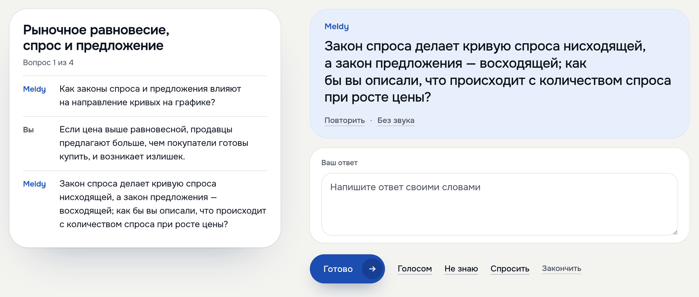

Представление блоков проекта
Meldy спрашивает по лекции голосом
и переспрашивает, если ответ ушёл в сторону
и переспрашивает, если ответ ушёл в сторону

1
2
3
1
Вопросы по карточкам
лекции, 4 за разговор
лекции, 4 за разговор
2
Ответ был про излишек,
Meldy вернул к вопросу
Meldy вернул к вопросу
3
Голосом или текстом,
«Не знаю», «Спросить»
«Не знаю», «Спросить»
Ещё в лекции подкаст: Макс и Софья обсуждают её, 12 реплик
После лекции её можно проговорить. «Поговорить о лекции»: Meldy задаёт четыре вопроса по карточкам этой лекции, студент отвечает голосом или текстом. В кадре настоящий ход: студент ответил про излишек, а вопрос был о направлении кривых, и Meldy вернул его к вопросу. Можно сказать «Не знаю» или спросить самому.
В той же лекции есть подкаст: два ведущих, Макс и Софья, обсуждают её примерно полторы минуты, его удобно слушать по дороге.
О кадре: живой сайт, 19 октября 2026 года, тестовый аккаунт, ответ набран текстом.